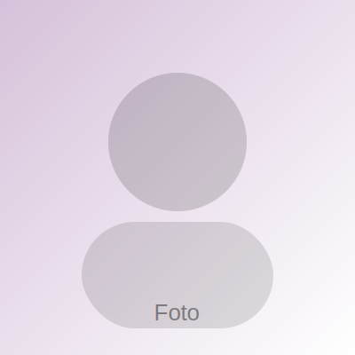

CIIS
El Centro de Integración Ingeniería y Sociedad considera los siguientes objetivos:
- Contribuir a la vinculación de la ingeniería con la comunidad a través del estudio, desarrollo de proyectos y el cultivo de habilidades relacionadas con la responsabilidad social.
- Construir un lugar de estudio, investigación y encuentro para fomentar maneras participativas de cooperación dentro de la Universidad.
- Crear vínculos con comunidades e instituciones nacionales e internacionales en relación al impacto de las tecnologías y la sociedad.
MISIÓN
Ser un centro que investiga, actúa, debate y reflexiona, vinculando la Ingeniería y la Sociedad en un contexto local, situados en el espacio socio-técnico-cultural.
VISIÓN
Centro de pensamiento, reflexión e investigación-acción en Ciencia, Tecnología y Sociedad (CTS) y Desarrollo Territorial y Local (DETEL), con énfasis en innovación, educación y organizaciones.
VALORES
- Probidad y transparencia
- Respeto, honestidad y ética irrestricta
- Calidad, excelencia y compromiso
- Responsabilidad y rigurosidad profesional
- Trabajo participativo y colaborativo
Miembros de CIIS

NOMBRE APELLIDO
Dirección CIIS
NOMBRE APELLIDO
Investigación
NOMBRE APELLIDO
Proyectos
NOMBRE APELLIDO
Vinculación
Lineamiento de trabajo
CTS
Ciencia, tecnología y sociedad
ET
Estudios y generación de conocimiento